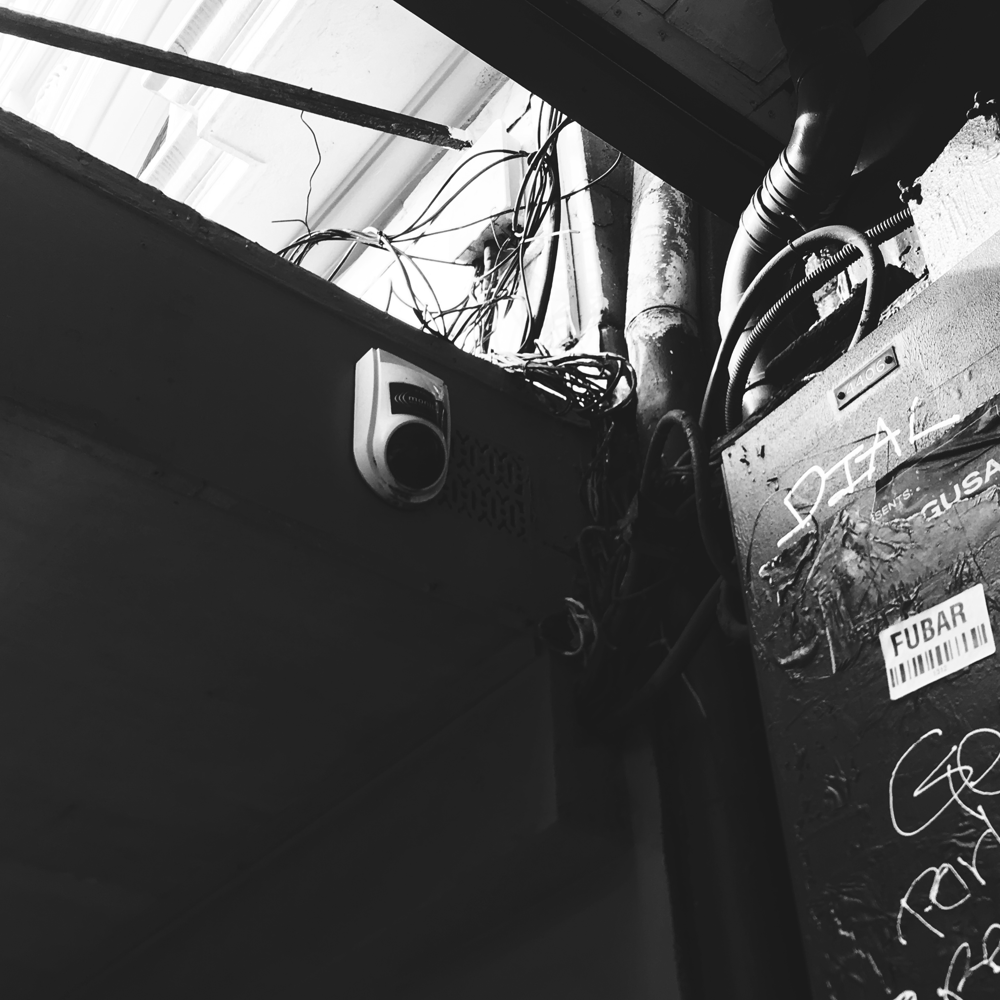
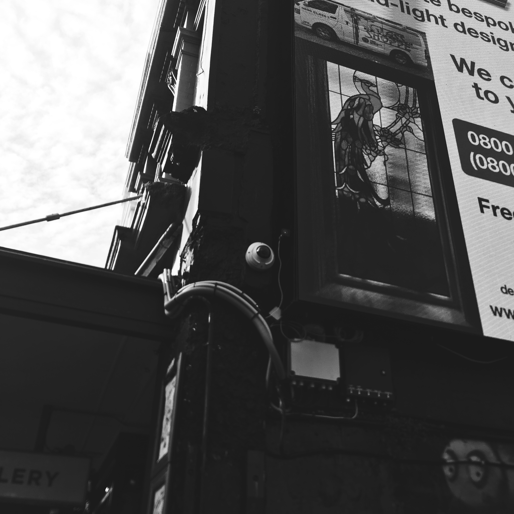
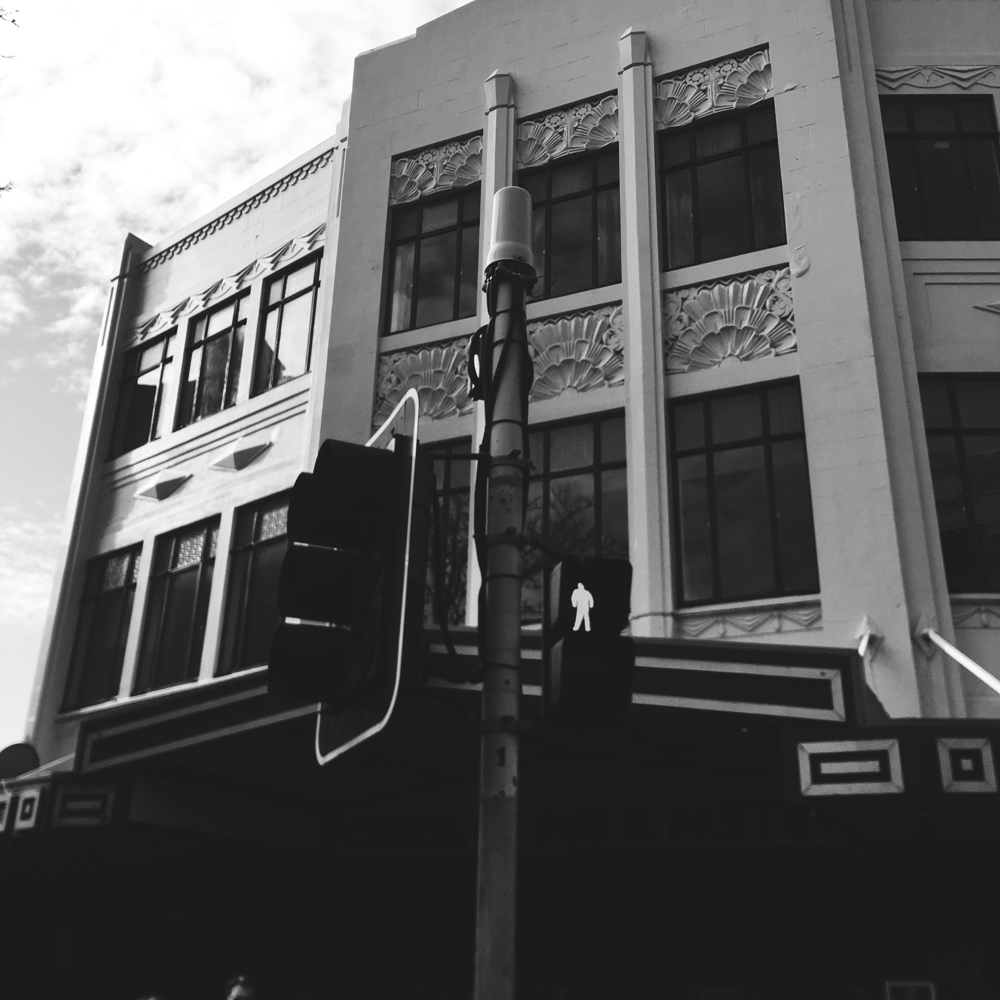
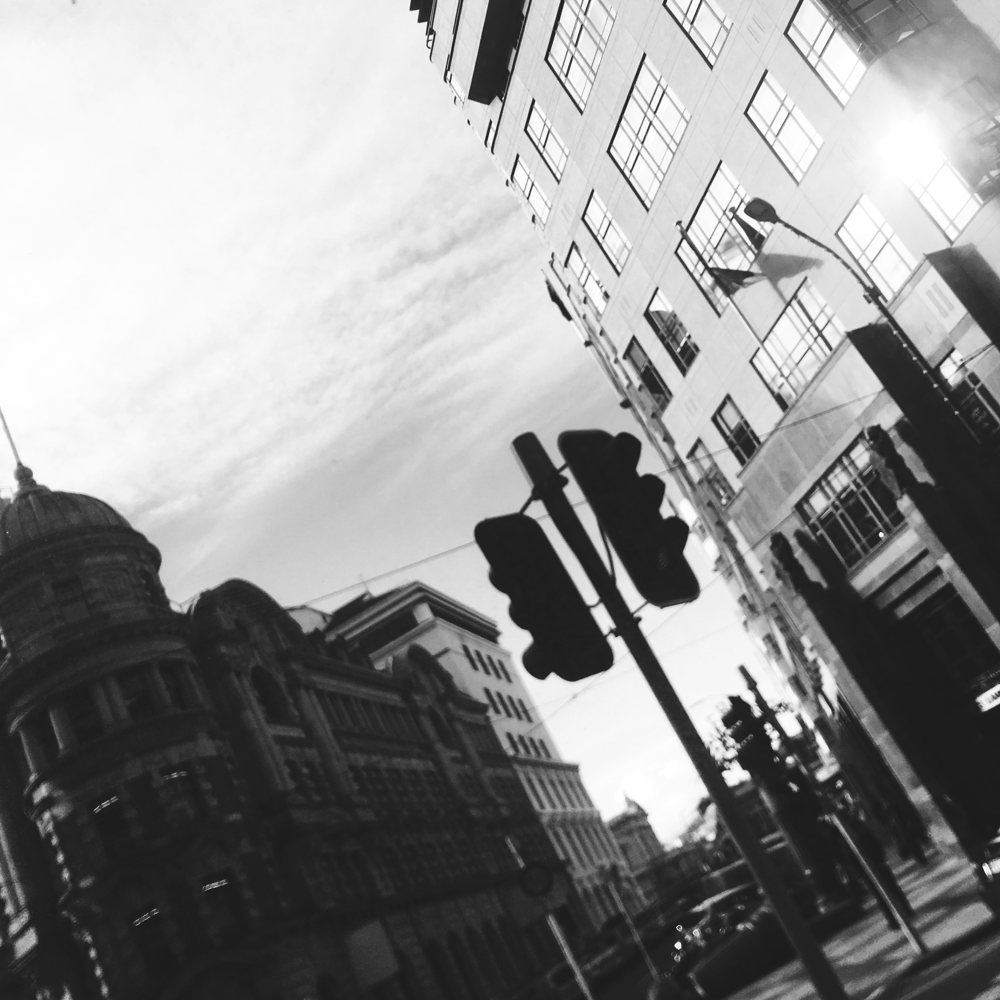
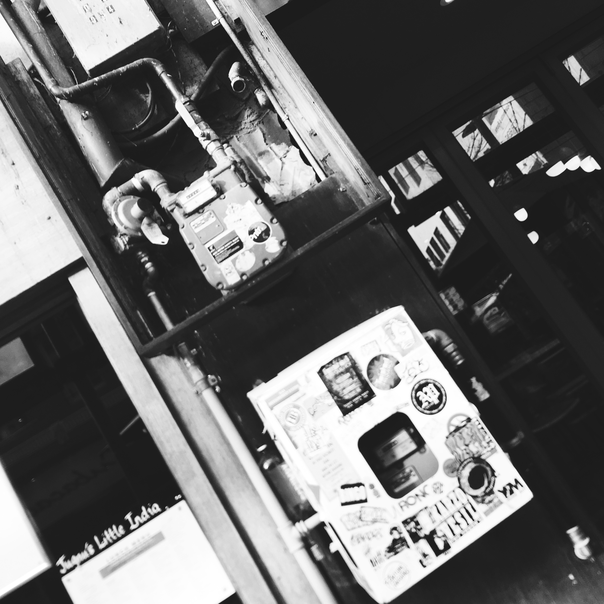
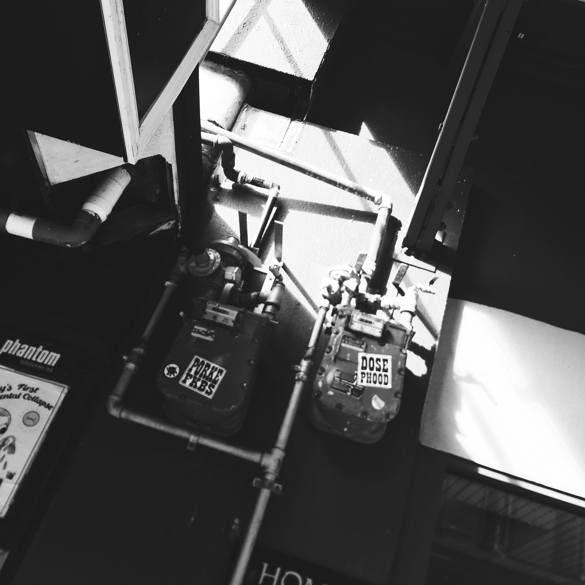
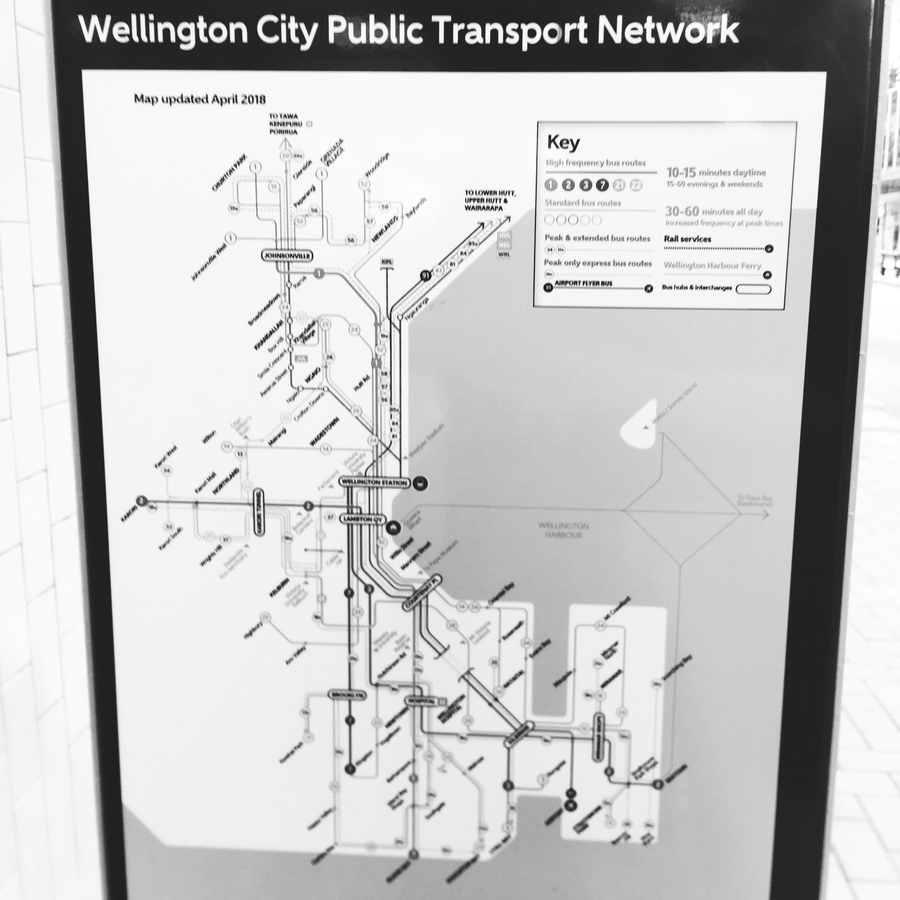
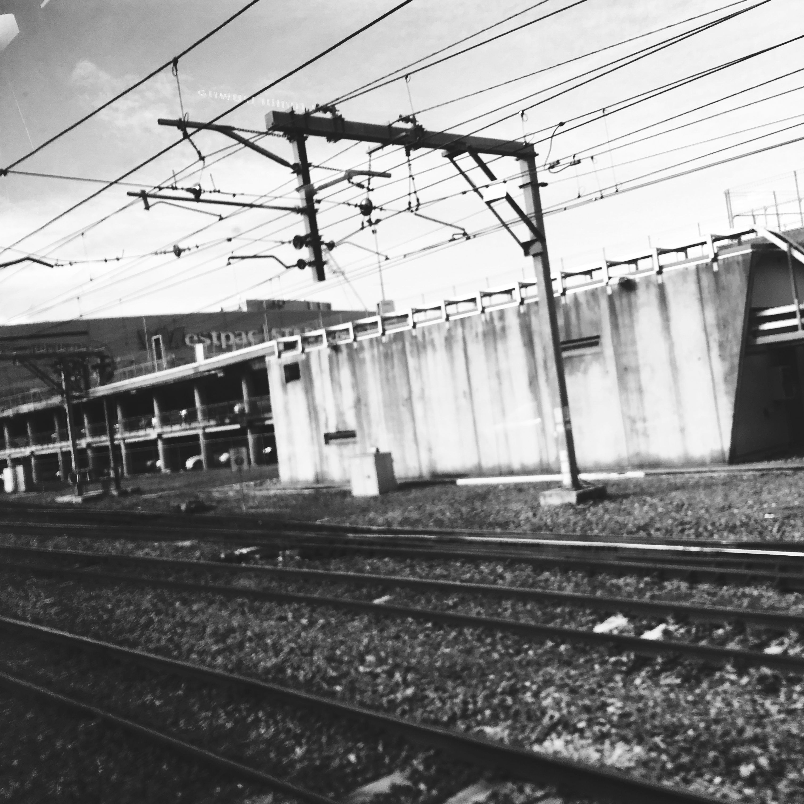

Image From https://www.imeche.org/news/news-article/how-the-internet-of-things-is-taking-over-the-world
CITY NETWORK
City networks are a geographical concept studying connections between cities by placing the cities as nodes on a network. In modern conceptions of cities, these networks play an important role in understanding the nature of cities. City networks can identify physical connections to other places, such as railways, canals, scheduled flights, or telecommunication networks, typically done using graph theory. City networks also exist in immaterial form, such as trade, global finance, markets, migration, cultural links, shared social spaces or shared histories. There are also networks of religious nature, in particular through pilgrimage.
IP CAMERA


An Internet Protocol camera, or IP camera, is a type of digital video camera that receives control data and sends image data via the Internet. They are commonly used for surveillance. Unlike analog closed-circuit television (CCTV) cameras, they require no local recording device, but only a local area network. Most IP cameras are webcams, but the term IP camera or netcam usually applies only to those used for surveillance that can be directly accessed over a network connection.
TRAFFIC LIGHTS


The normal function of traffic lights requires more than slight control and coordination to ensure that traffic and pedestrians move as smoothly, and safely as possible. A variety of different control systems are used to accomplish this, ranging from simple clockwork mechanisms to sophisticated computerized control and coordination systems that self-adjust to minimize delay to people using the junction.
GAS PIPING


The gas piping system in a compressor station includes the valving, pulsation control equipment, overpressure protection devices, cathodic protection facilities and structural supports to route the gas through the compressor and gas conditioning facilities.
PUBLIC TRANSPORTATION


Public transport in the Wellington Regionconsists of electric and diesel buses, commuter trains, ferries and a funicular (the Wellington Cable Car).
Wellington has an extensive network of bus routes. The routes are determined by the Regional Council, which regulates commercially provided services and solicits bids from private operators to run the services it is prepared to subsidise.
Transdev Wellington operates Metlink's five-line 154-kilometre (96 mi) commuter network, which fans north out of Wellington railway station as far as Waikanae in the north and Masterton in the east.